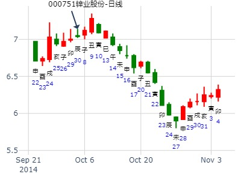
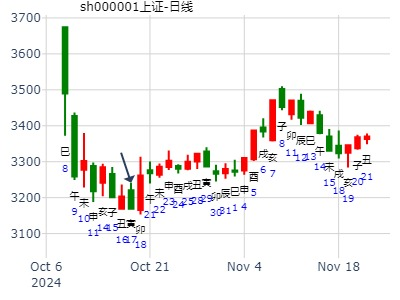

占事：000751锌业股份国庆节后3天涨跌
公历起卦时间：2014年9月30日17时57分 (电脑自动)
干支：甲午年 癸酉月 甲辰日 癸酉时 （日空：寅卯）
神煞：驿马－寅 桃花－酉 日禄－寅 贵人－丑，未
坤宫：坤为地 (六冲) 坎宫：水雷屯
六神 伏神 本 卦 变 卦
玄武 子孙癸酉金 ▅▅ ▅▅ 世 妻财戊子水 ▅▅ ▅▅
白虎 妻财癸亥水 ▅▅ ▅▅ ╳→ 兄弟戊戌土 ▅▅▅▅▅ 应
腾蛇 兄弟癸丑土 ▅▅ ▅▅ 子孙戊申金 ▅▅ ▅▅
勾陈 官鬼乙卯木 ▅▅ ▅▅ 应 兄弟庚辰土 ▅▅ ▅▅
朱雀 父母乙巳火 ▅▅ ▅▅ 官鬼庚寅木 ▅▅ ▅▅ 世
青龙 兄弟乙未土 ▅▅ ▅▅ ╳→ 妻财庚子水 ▅▅▅▅▅

占事：上证指数两周行情022202 王硬币卦
时间: 2024-10-17
干支: 甲辰年甲戌月甲寅日 (旬空: 子丑 )
坤为地 水雷屯
六神 伏神 本 卦 变 卦
玄武 ▅▅ ▅▅ 子孙酉金 世 ▅▅ ▅▅ 妻财子水
白虎 ▅▅ ▅▅ 妻财亥水 Ｘ→ ▅▅▅▅▅ 兄弟戌土 应
腾蛇 ▅▅ ▅▅ 兄弟丑土 ▅▅ ▅▅ 子孙申金
勾陈 ▅▅ ▅▅ 官鬼卯木 应 ▅▅ ▅▅ 兄弟辰土
朱雀 ▅▅ ▅▅ 父母巳火 ▅▅ ▅▅ 官鬼寅木 世
青龙 ▅▅ ▅▅ 兄弟未土 Ｘ→ ▅▅▅▅▅ 妻财子水
